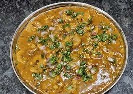

Daal

Description
Any combination of lentils or dal can be used to make this dal. Generally panchmel dal or chaar dal is made. Today, I have made this dal with a combination of Chana dal and Hari chilkewali dal. I.e. Bengal gram and green split moong dal.
Dal has to be spicy and flavourful bursting with flavours from the different spices. I have also done a generous tadka using ginger, garlic, green chillies and a few spices.
Ingredients
- 1/4 cup Green Moong Dal (Split)
- 1/4 cup Black Urad Dal (Split)
- 1/4 cup Chana dal (Bengal Gram Dal)
- 1 Onion , finely chopped
- 1 inch Ginger , finely chopped
- 1 Green Chilli , slit
- 3 clove Garlic , finely chopped
- 1 Tomato , finely chopped
- 1 Bay leaf (tej patta)
- 1 inch Cinnamon Stick (Dalchini)
- 1 teaspoon Turmeric powder (Haldi)
- 1 teaspoon Garam masala powder
- 5 sprig Coriander (Dhania)Leaves, chopped
- 1 teaspoon Ghee
- 1 teaspoon Cumin seeds (Jeera)
- 2 Dry Red Chillies , halved